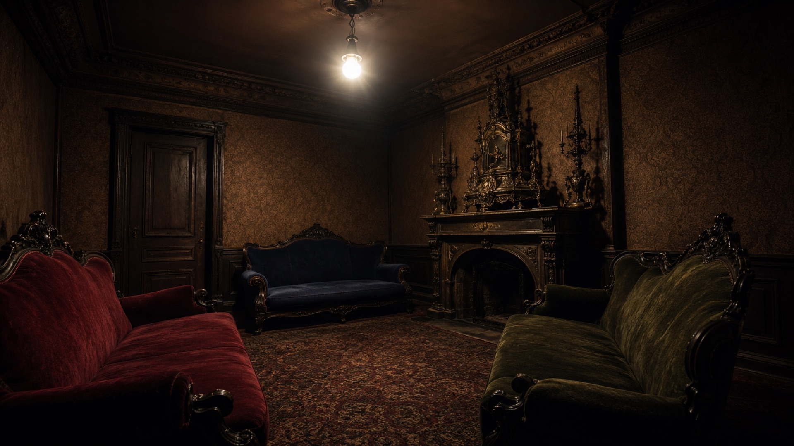

Joseph Garcin
Journalist
Shot by a firing squad for deserting a war. He needs the others to tell him he was brave, not a coward — and they won’t.
A one-act play · Paris, 1944
Three strangers are locked in a room together — forever. There is no torturer. There is no fire. There is no way out. That is the whole of hell.
The room
Three sofas — one red, one blue, one green. A bronze ornament on the mantel. The lights never switch off. There are no windows and no mirrors. A polite valet shows each guest in, one at a time, and the door clicks shut.
They expected racks and red-hot pincers. Instead they get this room, and each other.

The three damned
Each of the three did something in life they refuse, at first, to admit. They have been put together because each one is exactly what the other two cannot stand. There is no fourth person.
Shot by a firing squad for deserting a war. He needs the others to tell him he was brave, not a coward — and they won’t.

Clear-eyed and cruel. She is the first to understand the room: that the three of them are one another’s torturers, and that is the entire design.
Used to being admired. With no mirror and no kind eyes on her, she begins to feel she is disappearing.
The idea
Sartre’s hell has no devils and no flames. It is just other people — watching, judging, never sleeping, never looking away. Once you are dead your life is finished, and you can no longer change how anyone sees you. Garcin is a coward because Inès has decided he is, and there is no court of appeal.
That is the famous, frightening point of the play: you become whatever you are in someone else’s eyes.
L’enfer, c’est les autres.
Hell is other people.
— GarcinIn the play, the door finally swings open — and not one of them walks through it. You can.
←Leave the room